- Home ›
- PHP入門 ›
- PHPインストールと初期設定
「MSVCR140.dll/VCRUNTIME140.dllがないため、プログラムが開始できません」と表示された場合
Windows 用の PHP バイナリのように Visual Studio を使ってビルドされた Visual C++ のアプリケーションを実行する場合には必要なランタイムがインストールされていなければなりません。ここでは PHP を利用時に「MSVCR140.dll/VCRUNTIME140.dllがないため、プログラムが開始できません」などのような表示がされた場合に、必要となる Visual Studio ランタイムの取得とインストール方法を解説します。
Visual Studioのランタイムをダウンロード/インストールする
今回使用する Windows 向けの PHP バイナリのように Visual Studio を使ってビルドされているアプリケーションはを実行するには Visual Studio 用のランタイムが必要となります。入手は次の URL から行えます。
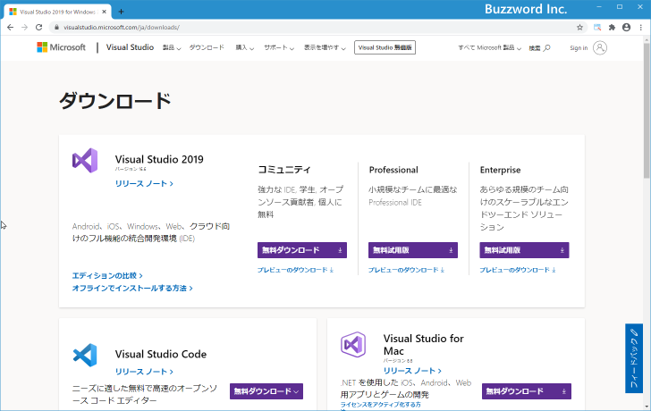
最新版である Visual Studio 2019 の再頒布可能パッケージを取得するには「その他のツールとフレームワーク」をクリックしてください。
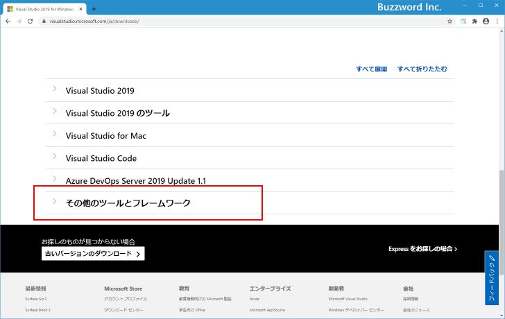
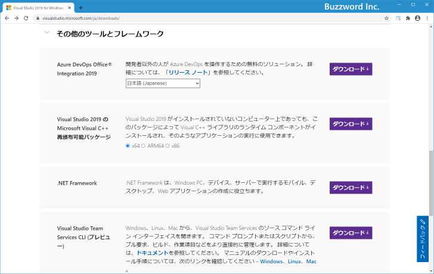
「Visual Studio 2019 の Microsoft Visual C++ 再頒布可能パッケージ」の右側に「x64」「ARM64」「x86」を選択するところがありますのでご自身の環境に合わせて選択してください。今回は「x64」を選択しました。その後で「ダウンロード」をクリックして下さい。
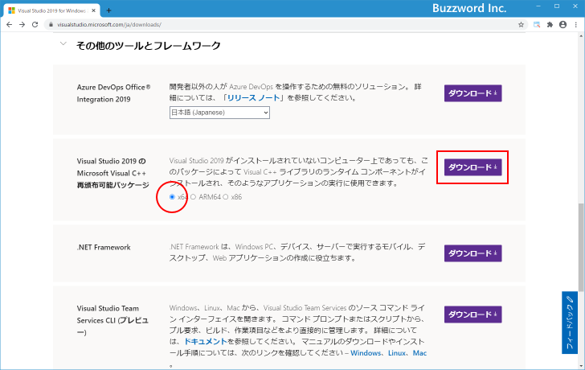
ダウンロードが開始されます。任意の場所に保存しておいて下さい。
ダウンロードが完了したらインストールを行います。ダウンロードした「VC_redist.x64.exe」をダブルクリックして下さい。次のような画面が表示されます。
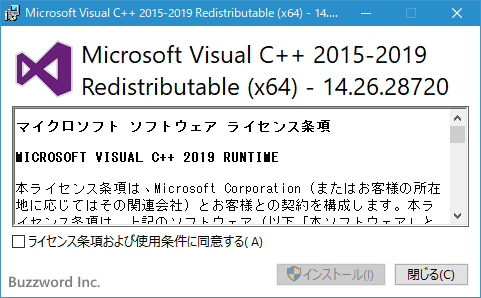
「マイクロソフト ソフトウェア ライセンス条項」をよく読んで頂き、ライセンス条項及び使用条件に同意できる場合にはチェックボックスをチェックして下さい。その後で「インストール」をクリックして下さい。インストールが開始されます。
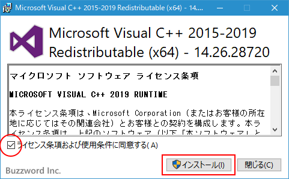
次のように表示されればインストールは完了です。
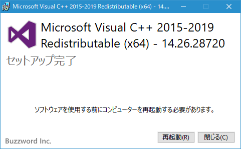
他のバージョンのランタイムを入手する
他のバージョンの Visual Studio ランタイムを入手する方法を参考までに記載しておきます。先ほどの URL へ再度アクセスして頂き、一番下にある「古いバージョンのダウンロード」をクリックしてください。
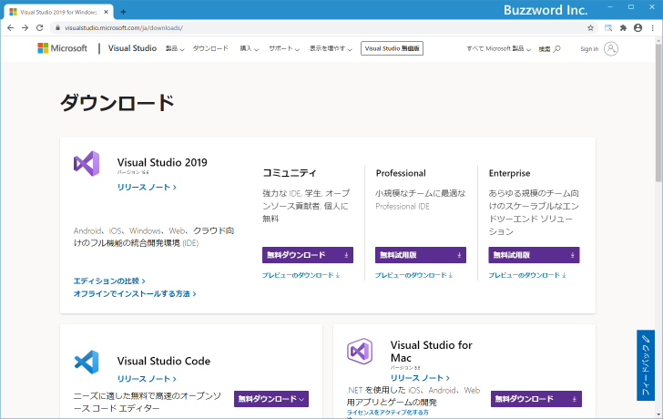
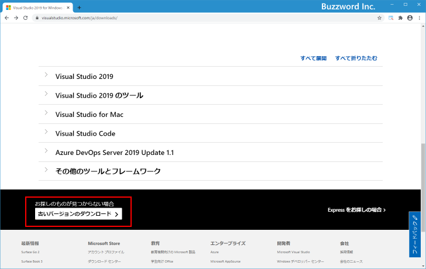
表示されたページの下の方にある「再頒布可能パッケージおよびビルドツール」をクリックしてください。
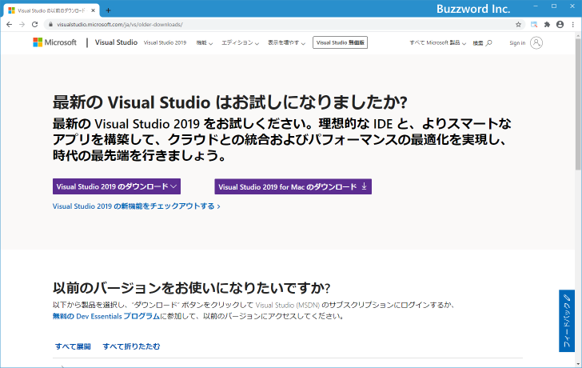
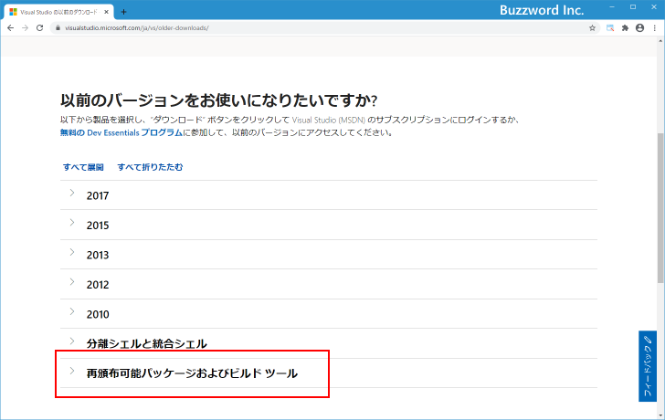
「Visual Studio 2010」「Visual Studio 2012」「Visual Studio 2013」「Microsoft Visual C++ 2015」「Visual Studio 2017」のラインタイムをそれぞれ取得することができます。
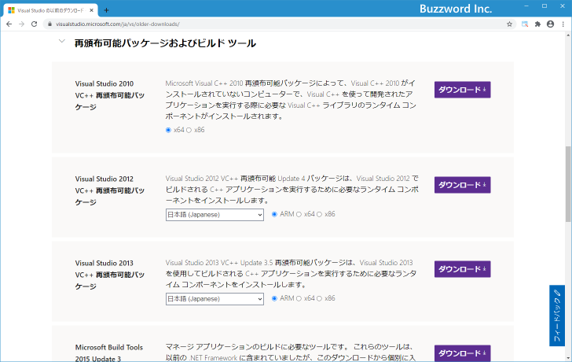
バージョン毎のランタイムのファイル名は次の通りです。
Visual Studio 2010 / msvcr100.dll Visual Studio 2012 / msvcr110.dll Visual Studio 2013 / msvcr120.dll Visual Studio 2015 / msvcr140.dll Visual Studio 2017 / msvcr150.dll Visual Studio 2019 / msvcr160.dll
-- --
アプリケーションの実行に必要となる Visual Studio ランタイムの取得とインストール方法について解説しました。
( Written by Tatsuo Ikura )

著者 / TATSUO IKURA
初心者～中級者の方を対象としたプログラミング方法や開発環境の構築の解説を行うサイトの運営を行っています。